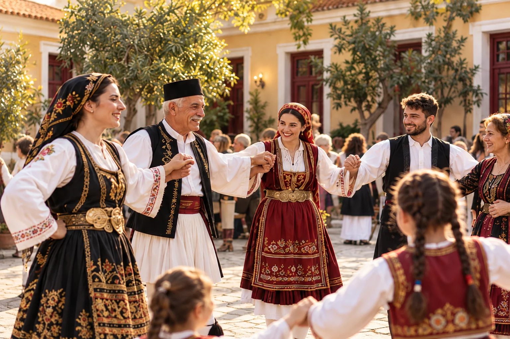

Μια ζωντανή παρέα
Άνθρωποι, συναντήσεις και κοινές εμπειρίες που μας φέρνουν πιο κοντά.
Μια κοινότητα με ρίζες στην Ήπειρο και στέγη στον Πειραιά. Ελάτε να γνωριστούμε, να μοιραστούμε ιστορίες και να κρατήσουμε την παράδοση ζωντανή.

Άνθρωποι, συναντήσεις και κοινές εμπειρίες που μας φέρνουν πιο κοντά.
Η χαρά της συμμετοχής και η γνωριμία με την ηπειρώτικη παράδοση, για όλες τις ηλικίες.
Οι ιστορίες του τόπου μας περνούν στις επόμενες γενιές, μέσα από τη συλλογική προσπάθεια.
Με ένα τηλεφώνημα ή ένα μήνυμα, κάνουμε την πρώτη γνωριμία.
Σας ενημερώνουμε για τις προϋποθέσεις, τα δικαιολογητικά, τη συνδρομή και τα επόμενα βήματα.
Συνεννοούμαστε για την επίσκεψή σας και συνεχίζουμε τη γνωριμία από κοντά.
Στα τμήματα παραδοσιακού χορού, μικροί και μεγάλοι συναντιόμαστε μέσα από τη μουσική και τα βήματα της Ηπείρου. Μαθαίνουμε, γνωριζόμαστε και μοιραζόμαστε τη χαρά του χορού.
Πληροφορίες για τα τμήματαΚαλέστε στο 210 4177378 ή γράψτε στο isp@ipirotikos.gr. Ο Σύνδεσμος θα σας ενημερώσει για τις προϋποθέσεις εγγραφής, τα απαραίτητα δικαιολογητικά, τη συνδρομή και τη διαδικασία που ακολουθεί.
Επικοινωνήστε με τη Λέσχη για το τρέχον πρόγραμμα, τα τμήματα και τις δυνατότητες συμμετοχής. Πριν από την πρώτη σας επίσκεψη, συνεννοηθείτε μαζί μας για την κατάλληλη ημέρα και ώρα.